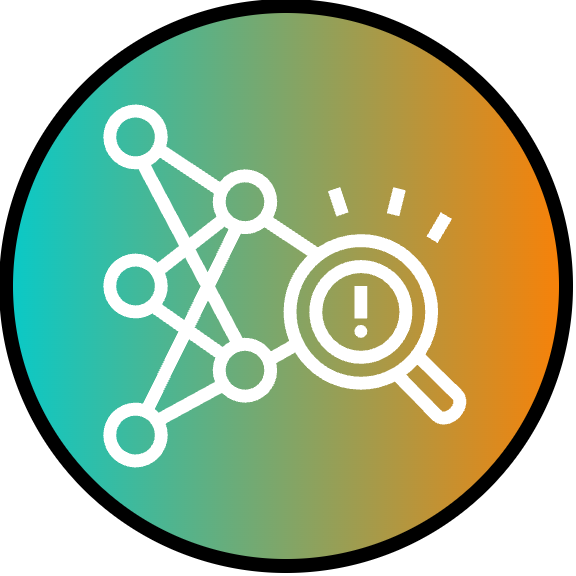
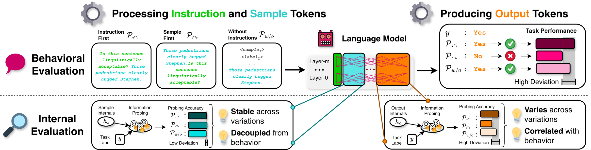
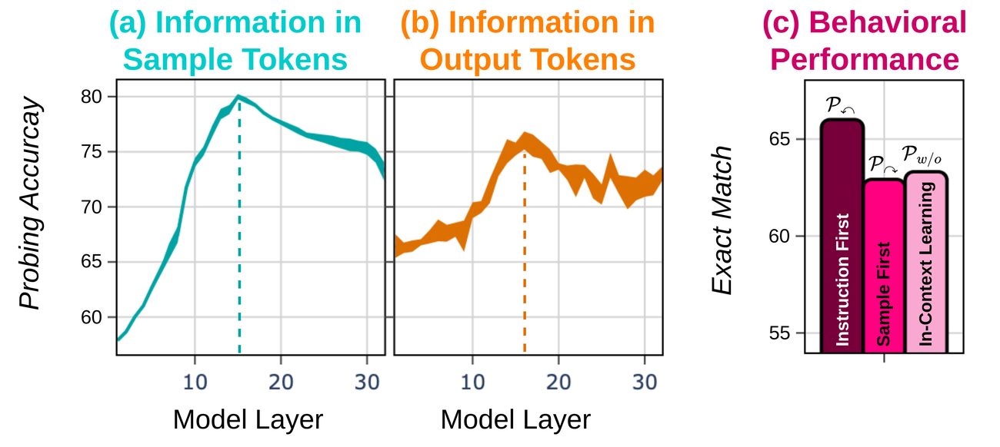
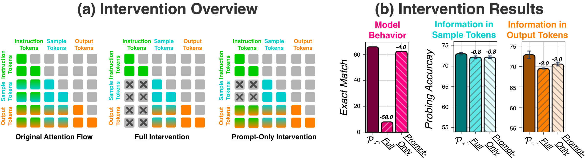
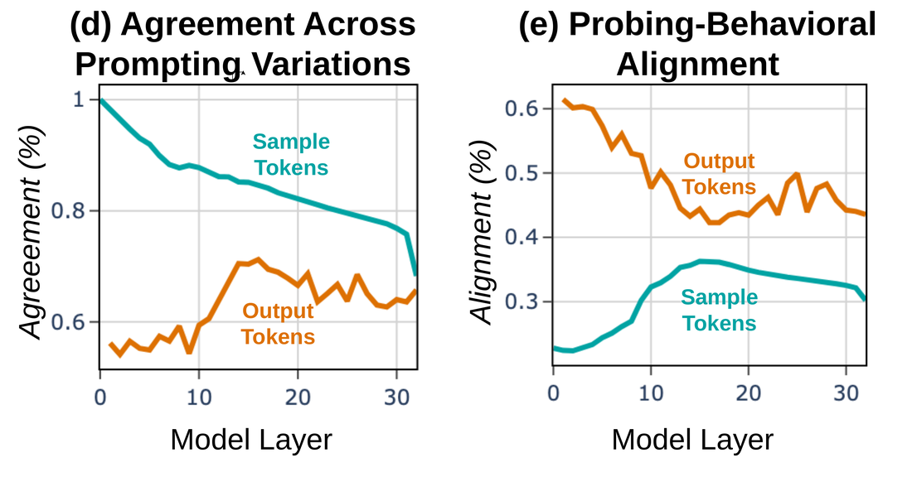
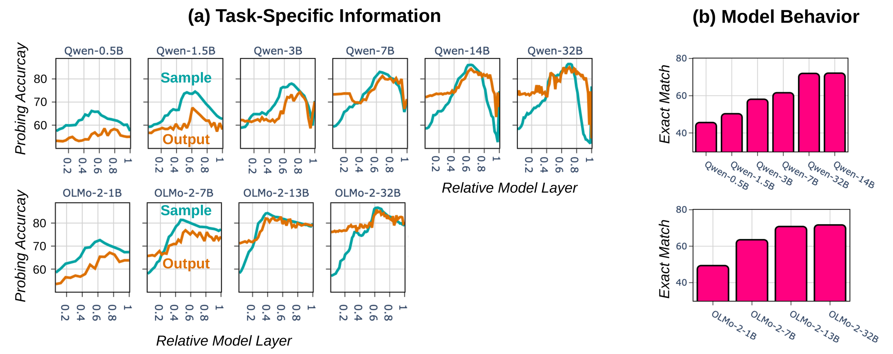
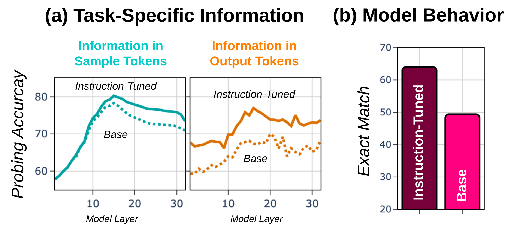
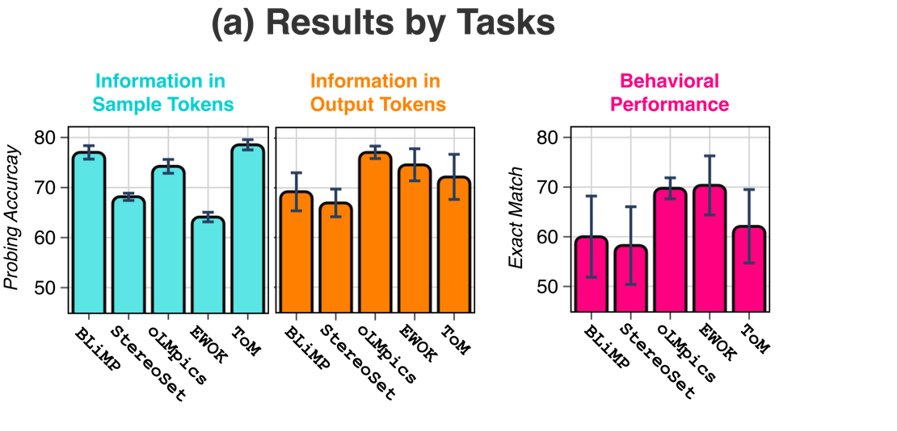
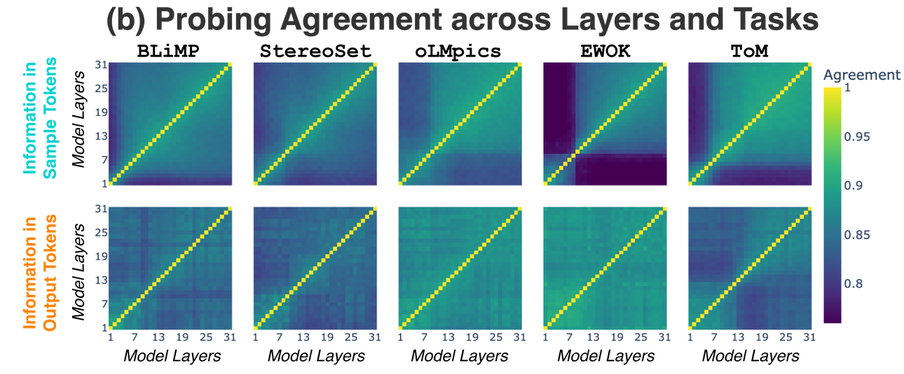

Instructions Shape Production of Language,not Processing
Overview
Instructions induce a production-centered mechanism in language models. Inspired by cognitive theories of language, we distinguish two stages: processing, where the model encodes the input, and production, where it generates a response. We observe a clear asymmetry: task information () at the processing stage remains stable across prompt variations and aligns only weakly with behavior (), whereas task information () at the production stage varies substantially and correlates strongly with behavior ().
What does this production-centered mechanism imply?
- For evaluation: Behavior alone conflates two distinct failure modes: the model fails to encode the answer, or it encodes it but does not express it. Our token-position abstraction provides a lens to disentangle these cases.
- For interpretation: Prompt sensitivity, scaling effects, and instruction-tuning gains primarily affect how models express knowledge rather than what they encode. This offers a complementary perspective on what constitutes a stronger model.
- For training: It remains an open question whether balancing the two stages would improve models, or whether the asymmetry is functional. In either case, our framework provides a basis for targeted investigation.
Method
To study these stages inside a decoder-only model, we use token position as an abstraction: sample tokens stand in for processing and output tokens for production. At each layer, we probe () how much task-specific information the model carries at each stage, compare three prompting variations (instruction-first, sample-first, and in-context learning), and run attention-based interventions to test the causal effect on behavior ().
More on the tasks, models, and experimental setup
We study five binary judgment tasks and cast each one as a yes/no question. That setup lets us compare the same target in both behavior and internal probing.
| Task | Question |
|---|---|
| BLiMP | Is the text linguistically acceptable? |
| StereoSet | Does the text contain stereotypical references? |
| oLMpics | Does the text make sense as a piece of reasoning? |
| EWOK | Is the described scenario plausible given world knowledge? |
| ToM | Are the assumptions in the final sentence logically correct? |
Our analysis covers three model families: Llama-3.1, OLMo-2, and Qwen-2.5. We report the main results as averages across families and tasks, and we also include per-family and per-task breakdowns.
At every layer, we train a linear probe to predict the binary task label from the internal state, separately for sample-token and output-token representations. To ensure stable results, we train every probe 20 times across four folds and five random seeds. For each layer, we average token representations before probing. We validate the setup with control tasks, an information-theoretic analysis, and comparisons to non-linear probes.
We compare three prompting variations: instruction first (instruction before the task sample), sample first (task sample followed by the instruction), and in-context learning with four labeled examples and no explicit instruction. We then measure how task-specific information changes across those variations and how it changes when the model selectively blocks attention flow from the instruction.

Main Findings
Processing stays stable; production varies and tracks behavior.
Across three prompting variations, task-specific information in sample tokens stays largely stable (±0.7 pp spread) and correlates only weakly with model behavior (τ = −0.15). The same information in output tokens varies substantially (±2.2 pp) and tracks behavior closely (τ = 0.62). Behavioral differences across prompts therefore reflect changes in how information is expressed, not how it is encoded.

Causal confirmation via intervention results
We intervene on the attention flow between instruction and sample tokens. Blocking instructions from all subsequent tokens drops accuracy by 58 pp and reduces output-token information — while sample-token information stays nearly intact (−0.8 pp). Blocking instructions only from sample tokens has minimal effect on behavior (−4 pp) or sample-token information.

Zooming in on instance-level results
We also check whether probing predictions agree per instance. Sample-token probes agree across prompting variations substantially more than output-token probes (left panel). At the same time, sample-token probes weakly align with behavior (up to 35%), while output-token probes align much more closely (up to 60%, right panel). These results show that output-token probes track the model's behavior — confirming the same asymmetry at the instance level.

Scaling strengthens production disproportionately.
As models grow, output-token information increases substantially more (46% in Qwen-2.5 and 30% in OLMo-2, comparing smallest to largest) than sample-token information (30% and 20%, respectively). Larger models therefore become better at expressing already-encoded information rather than at encoding more of it.

Instruction tuning primarily amplifies production.
Instruction-tuning substantially increases task-specific information in output-token representations, while sample-token representations stay comparatively unchanged. This makes the Superficial Alignment Hypothesis concrete at model internal computation: post-training overproportionally improve models on how they express task information, not how they encode it.

Task type modulates the processing-production asymmetry.
The production-centered mechanism holds consistently across tasks. Information in sample tokens is uncorrelated with information in output tokens (τ = 0), whereas output-token information strongly correlates with behavior (τ = 0.85). At the same time, the processing–production asymmetry varies systematically across tasks, reflecting task-specific computations. The separation between stages is most pronounced for knowledge and reasoning tasks (oLMpics, EWOK, ToM).
Across tasks, behavior consistently aligns with production, while processing and production remain decoupled. Task type modulates the strength of this asymmetry, with the largest separation for knowledge and reasoning tasks, like EWOK.

The two stages show distinct layer-wise dynamics.
Output-token representations show high and uniform cross-layer agreement, indicating early stabilization of production-stage information. In contrast, sample-token representations are continuously transformed, revealing a fundamental difference between production and processing stages. At the same time, sample-token representations vary across tasks, while output-token representations show more similar layer-wise agreement across tasks.

BibTeX
@article{waldis2026instructions,
title = {Instructions Shape Production of Language, not Processing},
author = {Waldis, Andreas and Choshen, Leshem and Hou, Yufang and Perlitz, Yotam},
year = {2026}
}